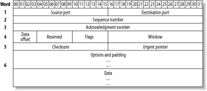

|
|
< Day Day Up > |
|
Hack 46 Humanize tcpdump Output
Make friends with tcpdump. One of the most useful utilities in a network administrator's tool belt is tcpdump. While you probably agree, I bet the very thought of wading through a tcpdump sniff makes you groan. Take heart: I'll walk you through some concrete examples that show how to zero in on the information you need to solve the particular network problem that prompted you to consider doing a packet sniff in the first place. You might be thinking, "Why bother? There are much nicer utilities out there." That's true. My personal favorite happens to be ethereal. However, you don't always have the luxury of working on a system that allows you to install third-party utilities or, for that matter, even has X installed. tcpdump is guaranteed to be on your BSD system. It's there, it's quick, it's dirty, and it's darn effective if you know how to harness its power. 5.6.1 The BasicsLet's start with the basics: starting a capture. Before you can capture any packets, you need to be the superuser. You also need to have the bpf device in your kernel. If you're using the GENERIC kernel, you're set. If you've created your own custom kernel [Hack #54], double-check you still have that device. In this example, my kernel configuration file is called CUSTOM: # grep bpf /usr/src/sys/i386/conf/CUSTOM # The 'bpf' device enables the Berkeley Packet Filter. device bpf #Berkeley packet filter You also need to know the names of your interfaces and which interface is cabled to the network you wish to sniff. You can find this with ifconfig: # ifconfig
rl0: flags=8802<UP,BROADCAST,RUNNING,SIMPLEX,MULTICAST> mtu 1500
inet 192.168.3.20 netmask 0xffffff00 broadcast 192.168.3.255
ether 00:05:5d:d2:19:b7
media: Ethernet autoselect (10baseT/UTP)
rl1: flags=8802<BROADCAST,SIMPLEX,MULTICAST> mtu 1500
inet 192.168.12.43 netmask 0xffffff00 broadcast 192.168.12.255
ether 00:05:5d:d1:ff:9d
media: Ethernet autoselect (10baseT/UTP)
ed0: flags=8843<UP,BROADCAST,RUNNING,SIMPLEX,MULTICAST> mtu 1500
inet 192.168.2.95 netmask 0xffffff00 broadcast 192.168.2.255
ether 00:50:ba:de:36:33
lp0: flags=8810<POINTOPOINT,SIMPLEX,MULTICAST> mtu 1500
lo0: flags=8049<UP,LOOPBACK,RUNNING,MULTICAST> mtu 16384
inet 127.0.0.1 netmask 0xff000000This particular system has three Ethernet (ether) cards attached to three different networks. Since I'm interested in the traffic on the 192.168.2.0 network, I'll use the ed0 interface. To start a capture, simply specify the interface you're interested in, with the interface (-i) switch: # tcpdump -i ed0 tcpdump: listening on ed0 Ctrl t tcpdump: 24 packets received by filter, 0 packets dropped by kernel Ctrl c 33 packets received by filter 0 packets dropped by kernel You will lose your prompt for the duration of the dump, and captured packets will be displayed to your terminal (these weren't shown in this example's output). If you press Ctrl-t, you can see how many packets have been captured so far and how many have been dropped, if any. If you're dropping packets, that means packets are arriving faster than tcpdump can process them. To end your sniff, press Ctrl-c and you'll return to your prompt. Unless you're a speed reader or have a very boring network, you'll probably prefer to send the captured packets to a file. Use the -w (write) switch to specify the name of the file you'd like to create: # tcpdump -i ed0 -w dumpfile tcpdump: listening on ed0 Ctrl t load: 0:00 cmd: tcpdump 1458 [bpf] 0.01u 0.00s 0% 1576k Ctrl c 56 packets received by filter 0 packets dropped by kernel Note that you won't be able to read that file with a pager or editor, as it is written in a format that only tcpdump or another packet-sniffer utility can understand. Instead, use the -r (read) switch and specify the name of the file: # tcpdump -r dumpfile | more 5.6.2 Display FiltersIf you try the previous examples on a moderately busy network, you'll probably remind yourself why you don't like using tcpdump. In a minute you can capture hundreds of seemingly unintelligible lines of numbers. You're wasting time and brain cells if you're wading through hundreds of lines and you're interested in only two or three of them. You can save on both of those precious resources if you spend a few minutes creating a display filter. There's always a reason behind a packet sniff. tcpdump is a very intelligent utility, but it's not a mind reader. However, if you can convert your reason into syntax that tcpdump understands, you can create a filter that will display only interesting packets. Let's say that you suspect broadcast packets are slowing down a network segment. This incantation will capture only broadcast packets: # tcpdump -i ed0 broadcast When you end your capture, you'll find that the number of packets received by the filter will be greater than the number of packets displayed to your screen. This means that tcpdump will still capture all packets, but will display only the packets matching your filter. This can give you a good idea of ratio. For example, if you captured 100 packets in a minute and only 4 of those packets were broadcasts, then broadcasts probably aren't an issue on that network. Next example: a particular workstation is having problems connecting to a server. Create a filter that zeros in on the packets between those two systems, in this case, genisis and server1: # tcpdump -i ed0 host genisis and server1 In this example, I only have to use the host keyword once, as it is assumed until I specify a different keyword. If I really like to type (which I don't), it would have been just as correct to type host genisis and host server1. You can also fine-tune that syntax to unidirectional traffic like so: # tcpdump -i ed0 src host genisis and dst host server1 That will show only the traffic that was created at genesis and is destined for server1. This time I had to repeat the word host, as one incantation was src host while the other was dst host. Suppose you're interested in only ICMP traffic: # tcpdump -i ed0 icmp or perhaps only ARP traffic: # tcpdump -i ed0 arp Perhaps you're having a problem with IKE, which uses UDP port 500: # tcpdump -i ed0 udp port 500 As you can see, tcpdump comes with many keywords that assist you in creating a display filter suited to your needs. These keywords are building blocks for more complex expressions. When you do your own combinations, you might find it easier to use the words and, or, and not. For example, this will capture all traffic on network 192.168.2.0 that is not ARP-based: # tcpdump -i ed0 net 192.168.2 and not arp Of course, you can find all of the keywords, along with examples, in man tcpdump. I've highlighted only the most commonly used keywords. 5.6.3 More Complicated Filterstcpdump is capable of zeroing in on any particular field in a packet. In order to harness this power, it's useful to have a picture of the various types of headers in front of you. Once you have a picture of the fields contained within the particular header you're interested in, the examples in man tcpdump will make a lot more sense. You'll know you're creating a very specific filter if your tcpdump expression contains the name of a protocol followed by square brackets ([ ]). Let's take a look at this example from the manpage, which is designed to capture only SYN-1s, the first packet in the TCP three-way handshake. Remember that square brackets may have special meaning to the shell, so quote complex expressions to prevent weird syntax errors: # tcpdump -i ed0 'tcp[13] = = 2' If you're familiar with the three-way handshake, you know that it involves the flags field of a TCP header. Let's find that particular field within the TCP header. Figure 5-1 shows the header fields of a TCP packet. Figure 5-1. TCP packet headersThe number enclosed within the [ ] represents how many octets into the header a particular field occurs. Each line, or word, of a header is 4 octets long. The Flags field is after the first three words (i.e., 12 octets) and occurs one more octet in, just after the Data Offset and Reserved fields. So, this particular TCP field occurs in octet 13 and is represented by tcp[13]. Still with me? Okay, where'd the = = 2 come from? For that one, you need to know the names of the flags as well as the decimal equivalents for each binary bit that represents a flag. These are listed in Table 5-4.
Finally, you need to know that the first packet in the three-way handshake is distinguished by just the SYN flag being turned on. Since all of the other flags will be turned off and will therefore contain a value of 0, a value of 2 in this field indicates that only the SYN bit is enabled. If math isn't your strong point, there is an alternate way to write this particular expression: # tcpdump -i ed0 'tcp[tcpflags] = =tcp-syn' If the particular field you're interested in happens to be the TCP flags field, the ICMP type field, or the ICMP code field, you're in luck. Those three fields are predefined, so you don't have to count how many octets in that field occurs in the header. So:
Again, the manpage lists which ICMP types have predefined keywords. To specify the other types or the codes, look up the desired number from the official list at http://www.iana.org/assignments/icmp-parameters. 5.6.4 Deciphering tcpdump OutputOkay, you've managed to capture just the packets you're interested in. Now, can you understand your results? Let's look at some sample lines from a dumpfile. This particular dump is the first few packets from a POP3 session: # tcpdump -r dumpfile 17:22:36.611386 arp who-has 192.168.2.100 tell genisis. 17:22:36.611642 arp reply 192.168.2.100 is-at 0:48:54:1e:2c:76 ARP packets are fairly comprehensible. In this example, my ARP table didn't contain an entry for my default gateway, 192.168.2.100. My system, genisis, sent out a request looking for that gateway. The gateway responded with its MAC address, 0:48:54:1e:2c:76. 17:22:36.620320 genisis..49570 > nscott11.bellnexxia.net.domain: 40816+ \A? pop1.sympatico.ca. (35) 17:22:36.628557 nscott11.bellnexxia.net.domain > genisis..49570: 40816 \1/4/4 A 209.226.175.83 (203) (DF) Once ARP had sorted out the MAC address, a DNS lookup had to occur. The word domain in these lines indicate a DNS lookup request followed by a DNS reply. Let's see if we can decipher both the request and the reply. Each starts with a timestamp, which is composed of the time and a random number, separated by a dot. Since many packets can be sent within the same second, the random number is used to differentiate between packets. The two hosts are separated by a greater-than sign. If you can visualize it as an arrow, like -->, you can see that genisis sent that first packet to nscott11.bellnexxia.net.domain. Each hostname has an extra dot, followed by either a port number or a resolved port name. In this case, genisis used port 49570, and nscott11.bellnexxia.net used the domain port. If you come across a port name you're not familiar with, look it up in /etc/services: % grep -w domain /etc/services domain 53/tcp #Domain Name Server domain 53/udp #Domain Name Server The next number, 40816, is an ID number that is shared by both the DNS client (genisis) and the DNS server. The client then asked a question (?) regarding the A record for pop1.sympatico.ca. The entire packet itself was 35 bytes long. The second packet, from the DNS server, shared the same ID number. It was also a longer packet, 203 bytes, as it contained the answer. See the 1/4/4? This means that there is one entry in the answer section, four entries in the authority section, and four entries in the additional section. (See [Hack #47] for an explanation of these sections.) The DNS server also sent the requested A record, which contains the requested IP address, 209.226.175.83. Now that name resolution has succeeded, a packet can be sent to the POP3 server: 17:22:36.629268 genisis..49499 > 209.226.175.83.pop3: S \2697729992:2697729992(0) win 65535 <mss 1460,nop,wscale 1,nop,nop,timestamp 2474141 0> (DF) 17:22:36.642617 209.226.175.83.pop3 > genisis..49499: S \2225396806:2225396806(0) ack 2697729993 win 25920 <nop,nop,timestamp \3293621409 2474141,nop,wscale 0,mss 1452> (DF) This output is much easier to read if you have a picture of a TCP header handy, as the output details the information found in that header. Each line starts out as before: the timestamp, source port, >, and destination port. We then see an S, which refers to that SYN flag. This is followed by the sequence number and, almost always, by the ack number. The only packet that doesn't have an ack number is the SYN-1, the first packet in this example. This is because a SYN-1 is the first TCP packet, so there is nothing to acknowledge yet. All other TCP packets after the SYN-1 will have an ack. Next comes the window size. If the packet has any options, they will be enclosed within angle brackets. Finally, the IP header had the "don't fragment" flag, DF, set. This is important enough to be printed at the end of any line representing a TCP or UDP header. 5.6.5 See Also
|
|
|
< Day Day Up > |
|